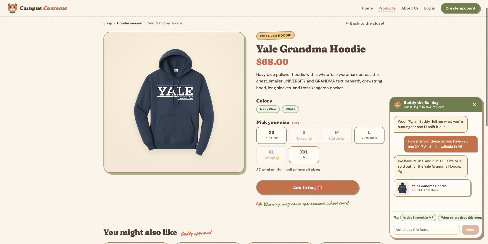
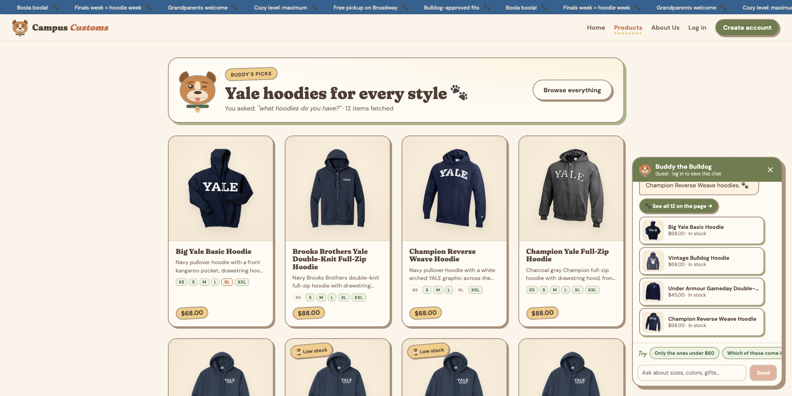
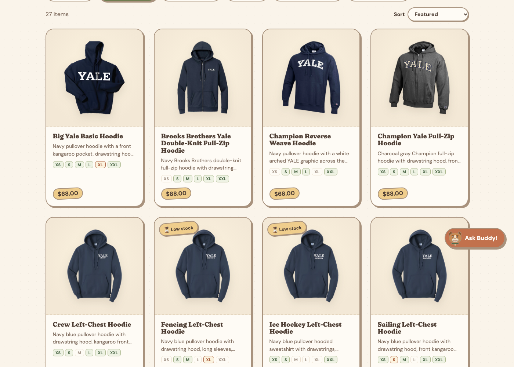

1Chat gives the real stock from the database

What it proves: Buddy answers stock questions by calling the
check_stock tool, which reads the inventory table in
campus_customs.db. The numbers in his reply match the size boxes on the same
product page, which load from the same table, and a sold-out size is stated plainly.
2Hoodie cards pop up after asking the chat

What it proves: after asking "what hoodies do you have?", the agent sent
back its matches as structured page_results. The website turned them into
product cards (photo, name, price, short info) on the page, and each card opens that
product's detail page.
3Stock badges on the product cards (Problem 9)

What it proves: shoppers see availability before they click. Sizes that
are sold out in the inventory table are crossed out on each card, nearly-gone
sizes are amber, and products running low get a "Low stock" badge. No product is sold out
in every size right now, so the all-sizes "Sold out" badge doesn't appear yet, but
individual sold-out sizes do.